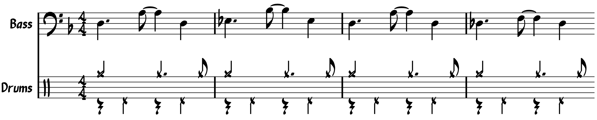

Chart: “Rush” from Cowboy Bebop

This week, I was going to write about MuseGroup, the parent company behind MuseScore. Since the start of this summer, there’s been a huge kerfuffle involving the MuseGroup’s control of Audacity. Most recently, the MuseGroup has been vaguely threatening a Chinese expatriate with refoulement in response to a MuseScore downloader browser extension.
The thing is, I don’t really know if I have anything to add to that discussion; much like the rest of the internet, MuseGroup’s behavior is a bit outrageous, and I have some abstract unease about the future of MuseScore. So instead, let’s talk about something else.
I recently finished up Cowboy Bebop for the third time. When I started this watch–through back in May, I shared a drum chart for the show’s theme, “Tank!”. But I actually have a few more songs from the show charted out. The number today is “Rush”, which plays during the big fight scene for the first episode’s climax. Much like “Tank!”, we only hear about 90 seconds of “Rush” in the actual show, but it’s a real song, with a solo section and everything.
It’s tough to describe to groove that drives this song. At first, it seems like the chart is reminiscent of “Nutville”, which is to say it alternates between a Latin feel and fast swing. The opening bassline features the ever–ubiquitous tresillo rhythm, but the drums are playing a very strange swing groove on top of it. See if you can figure out how these work together:
I don’t really get it. So I ended up listing more to the bass than the drums in order to get a sense of the groove. I have “Latin” written anytime I hear the tresillo, while “Swing” is used when I hear a driving, walking bassline. Even then, however, the bassist tends to change things up on the fly. I got ahold of a bootleg live version that was once available on a limited edition CD run, and I hear a much stronger contrast on the drums between the Latin and swing styles, with much less ad–libbing overall. To complicate things further, there’s an alternate arrangement of this song called “NY Rush” that has the drummer playing a strong swing groove throughout the entire tune.
So… I dunno, I guess I gravitate towards the live rendition. I don’t want the chart to include every subtly I suspect to be part of the tune. Whatever, we musicians can play songs how we feel, and ultimately these charts I create are my interpretation of the song. You could play the whole thing swung if you please.
There are a lot of cool figures to catch in this tune. The structure is pretty straightforward — you should be able to hear well–defined chorus sections. There’s an extended trombone solo that randomly ends during the final chorus, well no definitive climax or conclusion. I realize that this tune sounds like a bit of a mess after writing out all of these clarifications. Still a lot of fun to play though.
Something really fascinating happens during the final measures: the tempo appears to be cut in half, and the bassist plays an offbeat walking bassline. It’s quite disorienting, and I can’t say if it was on purpose or not. I wrote in this interpretation because it certainly makes things more challenging.
I have a few more songs from the show that I felt were worth charting, so stay tuned for those.
“Rush” on Songwhip.
Posted on July 25, 2021